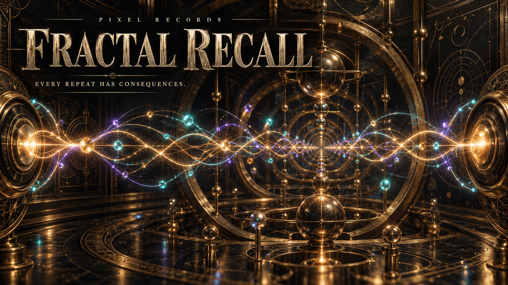

Echoes with a past.
Clean, Tape and Fractal characters. Memory lets previous signal levels influence later repeats. Branch grows a tree of finite wet taps.
FRACTAL RECALL / 0.3.0
An evolving stereo delay that remembers, branches, melts, and refuses to sit still.

01 / THE INSTRUMENT
Real controls. Real signal paths.
Light follows the audio, even when
the editor isn’t watching.
Follow the echo. Mirrored L/R histories show the signal travelling through delay memory. Branch for layers, or use Pair and Scatter for clearer channel separation.
NATIVE AU / VST3 · v0.3.002 / INSIDE THE ECHO
From a little movement to a very
long conversation with yourself.
Clean, Tape and Fractal characters. Memory lets previous signal levels influence later repeats. Branch grows a tree of finite wet taps.
Shift and Drift reshape wet echoes. Paired binaural paths breathe independently; optional measured headphone 3D adds another sense of space.
String, Wood, Metal or Glass resonators colour incoming audio before delay storage. Tune Size, Decay, Dispersion and Coupling to find a new object.
One LFO. Multiple destinations. Signed depths. Resonant Low and High Cut. Protected self-resonance when you want the loop to grow. MOD OFF when you want it to stop moving. PANIC when it’s time to come home.
03 / TAKE IT SOMEWHERE
Free to download. Open to explore.
No account. No subscription.
Just you, your DAW, and consequences.
Apple Silicon · macOS 12 or later
AUDIO UNIT + VST3 + STANDALONE
Download for Mac ↓v0.3.0 · 11 MB · DEVELOPMENT BUILDCopy the whole .component bundle to ~/Library/Audio/Plug-Ins/Components/, or .vst3 to ~/Library/Audio/Plug-Ins/VST3/, then reopen/rescan your DAW.
This build is ad-hoc signed, with no Apple notarization. macOS may require manual approval. Intel Macs are not included.
Windows x64 · VST3 host required
VST3 + STANDALONE
Download for Windows ↓v0.3.0 · 4.8 MB · DEVELOPMENT BUILDCopy the whole FRACTAL RECALL.vst3 folder to C:\Program Files\Common Files\VST3, then rescan your DAW. Development builds are unsigned.
Early access v0.3.0. Mac and Windows DSP/native tests and VST3 validation passed. Mac Audio Unit also passed strict validation. Host compatibility and your listening experience still deserve a test in your own session. Release notes & checksums ↗
04 / A FEW ECHOES ANSWERED
An audio effect. Feed it a bass, voice, guitar, drum loop or anything else from your DAW. The standalone app also needs an audio input; silence stays silent.
Normal stereo and the paired Binaural paths work over speakers. The separate Headphone 3D option uses measured HRIRs for headphone spatial rendering and costs more CPU.
RESONATE allows the loop to approach and exceed nominal unity, with linked protection on loop storage and the boosted wet return. PANIC fades and clears wet histories. The guard is not a master limiter for your dry signal.
LFO OFF stops the assignable LFO only. Binaural, Drift, Variation, spectral Motion and Depth Orbit have their own movement. Use MOD OFF to stop automatic movement; previously modulated material can remain in a recorded tail. PANIC clears the history.
No. Automatic Motion follows changes in spectral brightness, not notes. Pair and Scatter override automated pan to preserve clearer source-channel separation.
Yes. The plugin is released under GNU AGPLv3, with corresponding source and third-party notices. You can read, build and modify it under those terms. No account, telemetry or network connection is needed by the audio plugin.
PIXEL RECORDS / AUDIO EXPLORATIONS
Leave a little space.
Something will come back.